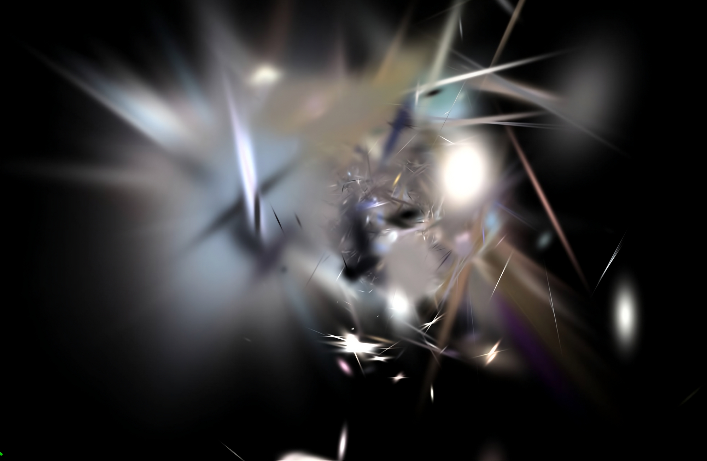
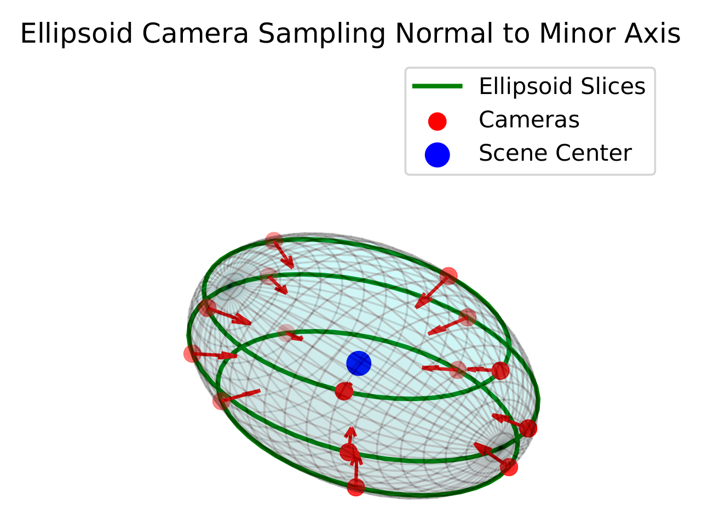
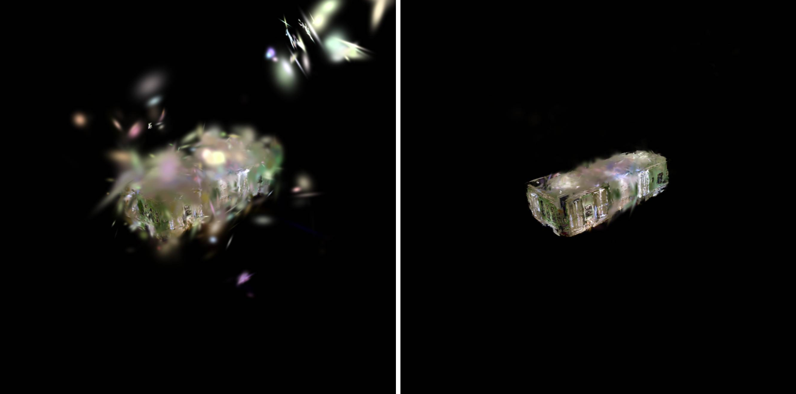
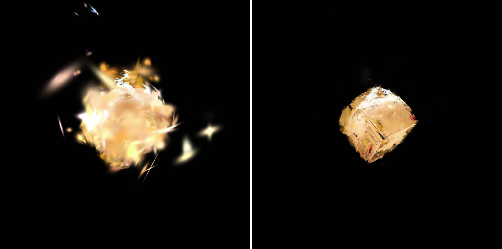
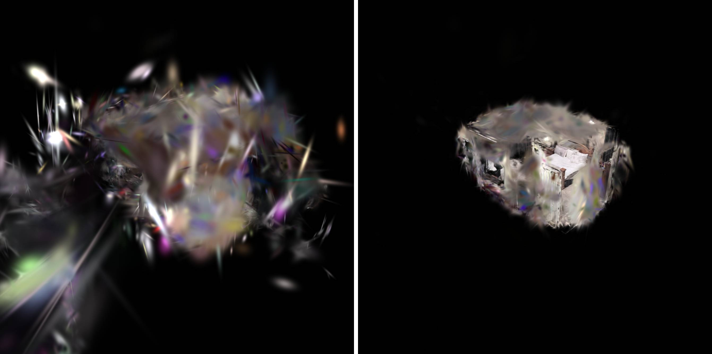
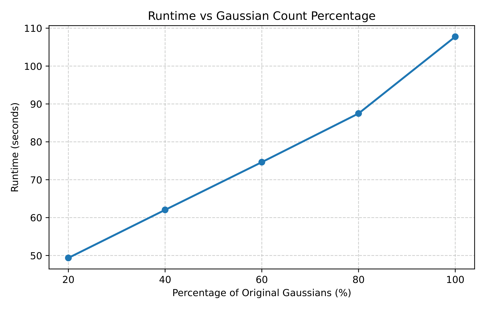

3D Gaussian Splatting has become a popular method of achieving photo-realistic renders from novel viewpoints while maintaining real-time rendering speeds. Despite its efficiency, 3D Gaussian Splatting struggles with rendering out-of-distribution camera poses, which often results in noisy renders.
This thesis addresses this limitation by introducing an offline preprocessing stage, inspired by EV3DGS. This method evaluates Gaussian stability, implemented as a custom CUDA kernel within the Gsplat framework, across many sampled camera positions. Cameras are sampled from a PCA-aligned ellipsoid fitted to the scene, ensuring robust coverage.
Through pruning Gaussians prior to rendering, the method improves the stability of renders from out-of-distribution views, while preserving the real-time performance advantages of 3D Gaussian Splatting.
3D Gaussian Splatting represents a scene with millions of 3D Gaussians optimized from a set of training images. When the scene is rendered from a camera pose far outside the distribution of training poses, Gaussians that were never constrained from that direction produce unstable, noisy floaters that obscure the main geometry.

This work builds on EV3DGS (Bowness and Poullis, 2025, Extreme Views: 3DGS Filter for Novel View Synthesis from Out-of-Distribution Camera Poses; project page, arXiv), which casts a ray per pixel, assigns each intersected Gaussian a sensitivity score measuring how unstable it is under small spatial perturbations, and skips Gaussians whose rejection ratio is too high. EV3DGS is very effective, but scoring Gaussians every frame adds computational overhead that impairs real-time rendering.
The contributions of this thesis are:
The overall cost is O(|S| × L × C × N × nx × ny), i.e. linear in the number of Gaussians N for fixed parameters.

Scenes were trained with gsplat's simple trainer (default strategy, 30,000 iterations) and filtered on an NVIDIA RTX 5070. CreepyAttic, DrJohnson, and Playroom come from the Deep Blending dataset (Hedman et al., 2018) and use full-resolution images. Bedroom is a custom-captured scene of a master bedroom, recorded on an iPhone 13 Pro Max and trained on images downscaled by 4×. All scenes were filtered with the same parameters: τxg = 10−4, τratio = 0.25, nx = ny = 100, percentile 90, S = {2.0, 4.0}, L = 5, C = 6.
Because the target views are out of distribution, there is no ground truth. Quality is therefore measured with no-reference metrics: NIQE, BRISQUE, and PIQE (lower is better). The renders come from an orbit around the scene center at 5× the 90th-percentile distance of the Gaussian means.
| Scene | No Filter | Filter | Filter Time (s) | ||||||
|---|---|---|---|---|---|---|---|---|---|
| NIQE↓ | BRISQUE↓ | PIQE↓ | FPS | NIQE↓ | BRISQUE↓ | PIQE↓ | FPS | ||
| CreepyAttic | 6.07 | 64.03 | 55.79 | 58.83 | 3.82 | 30.95 | 42.19 | 60.46 | 105.292 |
| DrJohnson | 6.90 | 86.76 | 64.32 | 69.48 | 4.22 | 34.75 | 50.12 | 62.55 | 101.414 |
| Playroom | 7.98 | 80.80 | 70.15 | 87.83 | 4.57 | 42.76 | 50.60 | 89.34 | 92.065 |
| Bedroom† | 7.41 | 69.15 | 76.14 | 263.61 | 4.94 | 38.18 | 59.67 | 262.74 | 52.684 |
Performance of unfiltered and filtered scenes. CreepyAttic, DrJohnson, and Playroom are from Deep Blending; †Bedroom is a custom-captured scene (iPhone 13 Pro Max, images downscaled 4×).
All three quality metrics improve on every scene after filtering, and the filter took under two minutes per scene, including CreepyAttic with over 4 million Gaussians. Rendering speed is comparable before and after filtering: FPS changed by −10% to +3% across scenes (CreepyAttic 58.83 → 60.46, DrJohnson 69.48 → 62.55, Playroom 87.83 → 89.34, Bedroom 263.61 → 262.74), and the filter adds no per-frame computation.



To check the linear complexity, subsets of CreepyAttic were created by randomly keeping 20%, 40%, 60%, and 80% of its Gaussians and filtered with the same parameters. Run-time grows linearly with the number of Gaussians.

An ablation study on CreepyAttic varied the thresholds, ellipsoid scalars, and number of cameras (nx = ny = 100, percentile 0.9 fixed). The number of sampled cameras had the largest effect on both pruning rate and run-time. The thresholds had a smaller effect. More aggressive pruning is not necessarily better, because the high-pruning runs also removed Gaussians that meaningfully contributed to the scene. The parameters of Run 1 were selected as the defaults, as they achieve a balance between accurate pruning and filtering speed.
| Run | τxg | τratio | Ellipsoid Scalars | Slices × Cams | Pruned (%) | Time (s) |
|---|---|---|---|---|---|---|
| 1 | 10−4 | 0.25 | [2.0, 4.0] | 5×6 | 6.67 | 111.7 |
| 2 | 10−4 | 0.25 | [2.0, 4.0] | 8×10 | 7.39 | 282.0 |
| 3 | 10−4 | 0.25 | [1.5, 3.0, 6.0] | 5×6 | 7.59 | 160.6 |
| 4 | 10−4 | 0.25 | [1.5, 3.0, 6.0] | 8×10 | 8.17 | 406.2 |
| 5 | 10−14 | 0.25 | [1.5, 3.0, 6.0] | 8×10 | 8.86 | 395.2 |
Selected ablation runs on CreepyAttic. All 16 runs are in Appendix Table A.1 of the thesis.
Pruning offline gives up the per-view adaptability of EV3DGS. A Gaussian flagged from one view may be stable from another, so permanently removing it risks degrading in-distribution views. Speed is also limited by the lack of per-view tiling in the ray–Gaussian intersection step. Future directions include tiling, combining an offline global filter with a lightweight per-view filter, and storing instability data so the renderer can make more informed per-view decisions.
@misc{teuttli2026prerender,
title = {Pre-Render Filtering of Unstable Gaussians for Improved Extreme View Synthesis in 3D Gaussian Splatting},
author = {Teuttli, Sebastian},
year = {2026},
note = {Honors Thesis, Barrett, The Honors College, Arizona State University}
}